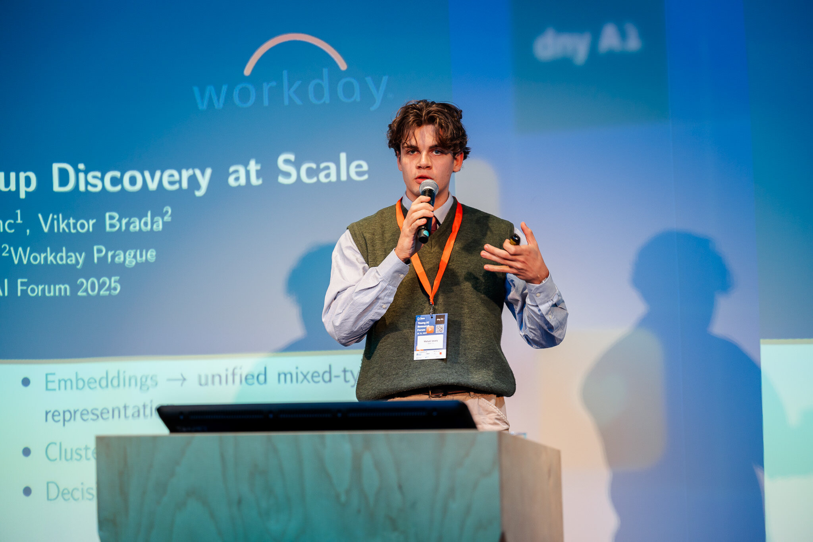
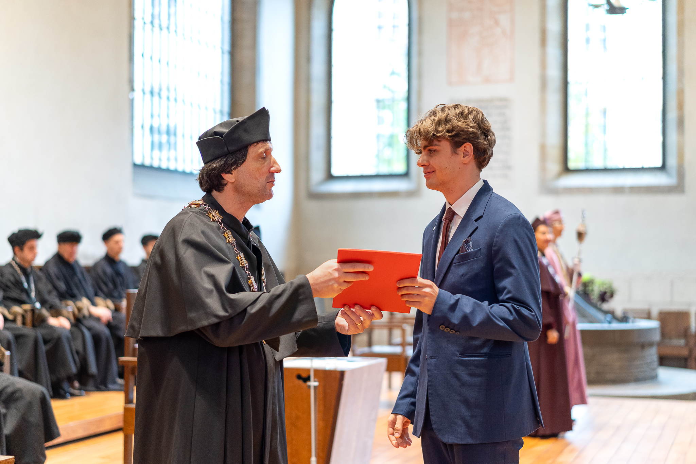

M
Matyáš Veselý
Master's Student | AI & Machine Learning | CTU FNSPE
I focus on machine learning for NLP and data mining, and more recently on computer vision. In my bachelor's thesis (in collaboration with Workday Prague) I designed the SDUEBA method for subgroup discovery at scale, now extended into a paper under review at DS 2026. I also contribute to the development of a RAG chatbot for supporting internal processes. Member of the prg.ai Minor program.
News
- Jun 2026 Our paper “Your Retriever Already Knows: Predicting RAG Retrieval Sufficiency from Score Distributions” was accepted to TSD 2026 (Brno, 1–4 Sep), to appear in Springer LNAI. [PDF]
- Jun 2026 Submitted a paper to DS 2026 (Discovery Science, Mainz): “Amortizing Subgroup Discovery: A Precompute/Infer Architecture for Multi-Query Workloads” (under review). [PDF]
- Apr 2026 Attended the Spring School of AI 2026 at Patejdlova bouda in the Krkonoše Mountains, organised by the Department of Theoretical Computer Science and Mathematical Logic at Charles University.
- Jan 2026 Started working at CTU FNSPE as a grant researcher on the project “Utilization of Artificial Intelligence for Supporting Administrative and Regulatory Activities of the State Office for Nuclear Safety”.
-
Dec 2025
Won the clathrin coated pits (CCP) detection and tracking competition, beating the detection accuracy of the baseline method developed by researchers at ZOI UTIA AV CR.
[GitHub]

-
Nov 2025
Presented SDUEBA at Young AI Research Forum 2025.

-
Oct 2025
Bachelor's promotion ceremony at CTU in Bethlehem Chapel.

- Sep 2025 Defended my bachelor's thesis with grade A! [Thesis] [GitHub]
- Jun 2025 Presented the SDUEBA method at SPMS 2025.
- Apr 2025 Accepted into the prg.ai Minor program, an inter-university AI programme connecting top students from CTU and Charles University across machine learning, computer vision, NLP, and AI ethics.